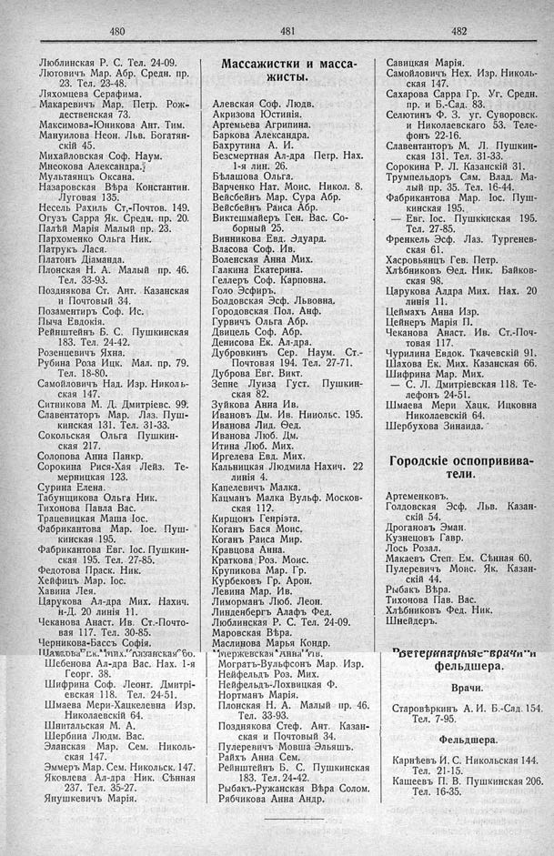

Лист источника 292
Скан

Распознанный текст
480
Люблинская Р. С. Тел. 24-09.
Лютовичъ Мар. Абр. Средн. пр.
23. Тел. 23-48.
Ляхомцева Серафима.
Макаревичъ Мар. Петр. Рож-
дественская 73.
Максимова-Юникова Ант. Тим.
Мануилова Неон. Льв. Богатян-
скій 45.
Михайловская Соф. Наум.
Мнеокова Александра.
Мультанцъ Оксана.
Назаровская Вѣра Константин.
Луговая 135.
Несель Рахиль Ст.-Почтов. 149.
Огузъ Сарра Як. Средн. пр. 20.
Палѣй Марія Малый пр. 23.
Пархоменко Ольга Ник.
Патрукъ Лася.
Платонъ Діаманда.
Плонская Н. А. Малый пр. 46.
Тел. 33-93.
Позднякова Ст. Ант. Казанская
и Почтовый 34.
Позаментиръ Соф. Ис.
Пыча Евдокія.
Рейнштейнъ Б. С. Пушкинская
183. Тел. 24-42.
Розенцевичъ Яхна.
Рубина Роза Ицк. Мал. пр. 79.
Тел. 18-80.
Самойловичъ Над. Изр. Николь-
ская 147.
Ситникова М. Д. Дмитріевс. 99.
Славентаторъ Мар. Лаз. Пуш-
кинская 131. Тел. 31-33.
Сокольская Ольга Пушкин-
ская 217.
Солопова Анна Панкр.
Сорокина Рися-Хая Лейз. Те-
мерницкая 123.
Сурина Елена.
Табунщикова Ольга Ник.
Тихонова Павла Вас.
Трацевицкая Маша Іос.
Фабрикантова Мар. Іос. Пуш-
кинская 195.
Фабрикантова Евг. Іос. Пушкин-
ская 195. Тел. 27-85.
Федотова Праск. Ник.
Хейфицъ Мар. Іос.
Хавина Лея.
Царукова Ал-дра Мих. Нахич.
н-Д. 20 линія 11.
Чеканова Анаст. Ив. Ст.-Почто-
вая 117. Тел. 30-85.
Черникова-Бассъ Софія.
Шахова Ек. Мих. Казанская 66.
Шебенова Ал-дра Вас. Нах. 1-я
Георг. 38.
Шифрина Соф. Леонт. Дмитрі-
евская 118. Тел. 24-51.
Шмаева Мери-Хацкелевна Изр.
Николаевскій 64.
Шнитальская М. А.
Щербина Людм. Вас.
Эланская Мар. Сем. Николь-
ская 147.
Эммеръ Мар. Сем. Никольск. 147.
Яковлева Ал-дра Ник. Сѣнная
237. Тел. 35-27.
Янушкевичъ Марія.
481
Массажистки и масса-
жисты.
Алевская Соф. Людв.
Акризова Юстинія.
Артемьева Агрипина.
Баркова Александра.
Бахрутина А. И.
Безсмертная Ал-дра Петр. Нах.
1-я лин. 26.
Бѣлашова Ольга.
Варченко Нат. Моис. Никол. 8.
Вейсбейнъ Мар. Сура Абр.
Вейсбейнъ Раиса Абр.
Виктешмайеръ Ген. Вас. Со-
борный 25.
Винникова Евд. Эдуард.
Власова Соф. Ив.
Воленская Анна Мих.
Галкина Екатерина.
Геллеръ Соф. Карповна.
Голо Эсфиръ.
Болдовская Эсф. Львовна.
Городовская Пол. Анф.
Гурвичъ Ольга Абр.
Двицель Соф. Абр.
Денисова Ек. Ал-дра.
Дубровкинъ Сер. Наум. Ст.-
Почтовая 194. Тел. 27-71.
Дуброва Евг. Викт.
Зепне Луиза Густ. Пушкин-
ская 82.
Зуйкова Анна Ив.
Ивановъ Дм. Ив. Нииольс. 195.
Иванова Лид. Ѳед.
Иванова Люб. Дм.
Итина Люб. Мих.
Иргелева Евд. Мих.
Кальницкая Людмила Нахич. 22
линія 4.
Капелевичъ Малка.
Кацманъ Малка Вульф. Москов-
ская 112.
Киршонъ Генріэта.
Коганъ Бася Моис.
Коганъ Раиса Мир.
Кравцова Анна.
Краткова Роз. Моис.
Крупикова Мар. Гр.
Курбековъ Гр. Арон.
Левина Мар. Ив.
Лиморманъ Люб. Леон.
Линденбергъ Алафъ Фед.
Люблинская Р. С. Тел. 24-09.
Маровская Вѣра.
Маслинова Марья Кондр.
Мержевская Анна Ив.
Могратъ-Вульфсонъ Мар. Изр.
Нейфельдъ Роз. Мих.
Нейфельдъ-Лохвицкая Ф.
Нортманъ Марія.
Плонская Н. А. Малый пр. 46.
Тел. 33-93.
Позднякова Стеф. Ант. Казан-
ская и Почтовый 34.
Пулеревичъ Мовша Эльяшъ.
Райхъ Анна Сем.
Рейнштейнъ Б. С. Пушкинская
183. Тел. 24-42.
Рыбакъ-Ружанская Вѣра Солом.
Рябчикова Анна Андр.
482
Савицкая Марія.
Самойловичъ Нех. Изр. Николь-
ская 147.
Сахарова Сарра Гр. Уг. Средн.
пр. и Б.-Сад. 83.
Селютинъ Ф. З. уг. Суворовск.
и Николаевскаго 53. Теле-
фонъ 22-16.
Славентаноръ М. Л. Пушкин-
ская 131. Тел. 31-33.
Сорокина Р. Л. Казанскій 31.
Трумпельдоръ Сам. Влад. Ма-
лый пр. 35. Тел. 16-44.
Фабрикантова Мар. Іос. Пуш-
кинская 195.
— Евг. Іос. Пушккнская 195.
Тел. 27-85.
Френкель Эсф. Лаз. Тургенев-
ская 61.
Хасровьянцъ Гев. Петр.
Хлѣбниковъ Ѳед. Ник. Байков-
ская 98.
Царукова Алдра Мих. Нах. 20
линія 11.
Цеймахъ Анна Изр.
Цейнеръ Марія П.
Чеканова Анаст. Ив. Ст.-Поч-
товая 117.
Чурилина Евдок. Ткачевскій 91.
Шахова Ек. Мих. Казанская 66.
Шифрина Мар. Мих.
— С. Л. Дмитріевская 118. Те-
лефонъ 24-51.
Шмаева Мери Хацк. Ицковна
Николаевскій 64.
Шербухова Зинаида.
Городскіе оспопривива-
тели.
Артеменковъ.
Голдовская Эсф. Льв. Казан-
скій 54.
Дрогановъ Эман.
Кузнецовъ Гавр.
Лось Розал.
Макаевъ Степ. Ем. Сѣнная 60.
Пулеревичъ Моис. Як. Казан-
скій 44.
Рыбакъ Вѣра.
Тихонова Пав. Вас.
Хлѣбниковъ Фед. Ник.
Шнейдеръ.
Ветеринарные врачи и
фельдшера.
Врачи.
Старовѣркинъ А. И. Б.-Сад. 154.
Тел. 7-95.
Фельдшера.
Карнѣевъ И. С. Никольская 144.
Тел. 21-15.
Кашеевъ П. В. Пушкинская 206.
Тел. 16-35.